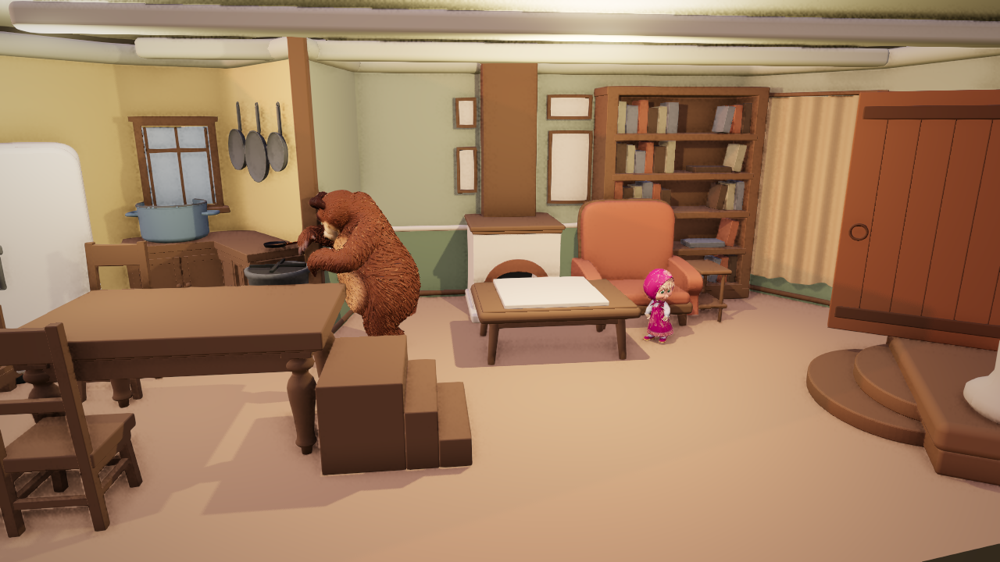
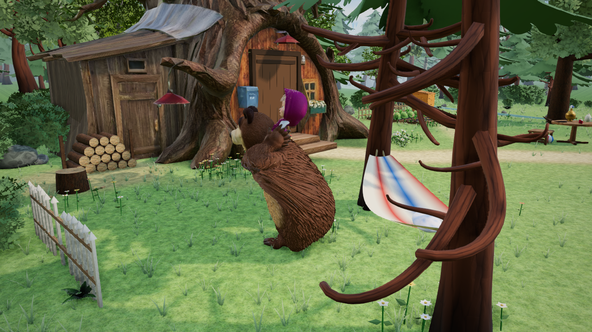

Mabear · Deployed · 9 November 2026
Bear opens the door and walks inside.
Deployed · No external-service credits used
Physics now defaults on for supported yard stories. Hugs, shoulder rides and unsupported interactions keep animation ownership. The first addressable object is the house door.
Actual before / after
Same instruction: “Bear goes to the house, opens the door and comes in.” Then he closes the door and waves. The second comparison checks simply approaching the door.
Archived pre-change app on the left; current app on the right. Actual compiler, renderer and rigs; silent, 1× playback. The shorter before clip holds at its end while the new sequence finishes.
Original entry recording · New entry recording, full size · Entry comparison · Approach comparison
Open, enter, close — and return outside
The state persists across scenes. The compiler opens a closed door before crossing and uses an explicit closing request. There is one logical door, represented in the exterior and interior sets.
Existing stories still matter

Cozy evening: cooking remains visible after the doorway timing correction.

Bear’s Nap: hugs and shoulder rides retain the existing animation.
Checks and limits
798 tests, typechecking and production build passed. Actual editor checks cover default physics, play/pause/resume, repeated seeking, source edits and scene deletion. Blocking physics initialization preserves usable animation playback.
Only the house door is interactive. The entrance uses a camera cut between separately staged sets. Door operation is a simple authored gesture; exact hand-to-handle contact remains a limitation. Physics still covers the bounded central yard, Masha and one ball, with no actor/ball collisions or general navigation.
Review and applied fixes · Door/editor evidence · Default-physics editor evidence · Built-app check · Video decode checks
Observed performance
MacBook Pro · Apple M1 Max · 32 GB · macOS 27.2 · Chrome 156 / native Metal · 1280×720. Four-second warm samples; not a device survey. Door stories use animation for Bear. Active-physics samples separately measure the obstacle and ball-drop story fixtures.
Background cache preparation is deliberately cleared for the uncached measurement. Before measurements · After measurements and source fingerprint · Active-physics measurements.